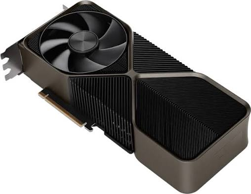
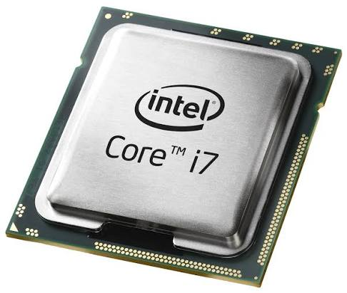
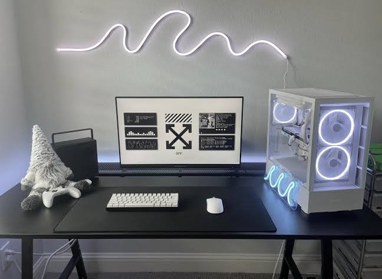

Arhitectura Plăcilor Video și Procesoarelor
Placa video (GPU) este responsabilă de randarea grafică și calculul cadrelor pe secundă (FPS).
Procesorul (CPU) este creierul sistemului, gestionând fizica jocului, inteligența artificială și instrucțiunile de sistem.
Galerie Componente



Prezentare Video
Multimedia: